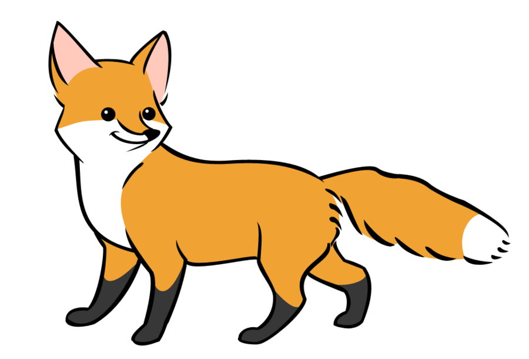

Bajka: "Lis i Wilk" ~ I. Krasicki
Wpadł lis w jamę, wilk nadszedł, a widząc w złym stanie, Oświadczył mu żal szczery i politowanie. Nie żałuj — lis zawołał — chciej lepiej ratować. Zgrzeszyłeś, bracie lisie, trzeba pokutować. I nagroda, i kara zarówno się mierzy: Kto nikomu nie wierzył, nikt temu nie wierzy.
